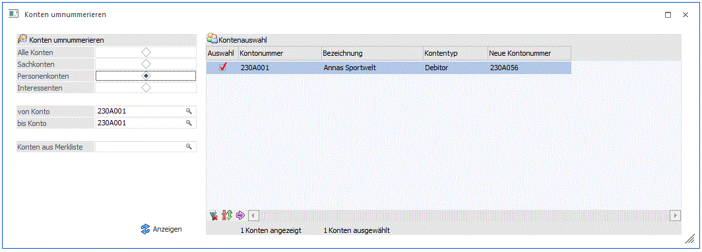

Im Fenster "Konten umnummerieren", welches über den Menüpunkt…
1 WinLine START
1 Abschluss
1 Konten
1 Umnummerieren
… aufgerufen wird, können Sachkonten, Personenkonten und Interessentenkonten umnummeriert werden.

Konten umnummerieren
In diesem Bereich kann entschieden werden, welche Art von Konten umnummeriert werden soll.
Ø Sachkonto/Personenkonten/Interessenten
Bei Auswahl einer der Radiobuttons kann ein bestimmtes Konto bzw. meheren Konten des selektierten Kontentyps bearbeitet werden. Das Konto kann im darunterliegenden Feld "Konto" eingetragen werden bzw. aus dem Konten-Matchcode selektiert werden. Wenn kein Konto hinterlegt wird, werden alle Konten des selektierten Kontentyps mit dem Button "Anzeige" in die Bildschirmtabelle geladen.
Ø Konten aus Merkliste
In diesem Feld kann eine Merkliste vom Typ "Konten" eingetragen werden. Der Merklisten-Matchcode steht auch für die Suche nach einer bestimmten Merkliste zur Verfügung. Es werden aus der Merkliste nur Konten des selektierten Kontentyps (Sach-, Personen-, Interesstenkonten) in die Tabelle hinzugefügt.
Bildschirmtabelle "Kontenauswahl"
Ø Auswahl
Wenn diese Checkbox für eine Tabellenzeile aktiviert ist, wird das Konto bei der Umnummerierung berücksichtigt.
Ø Kontonummer/-bezeichnung
Die Kontonummer bzw. -bezeichnung des Personenkontos werden in diesen Spalten angezeigt.
Ø Kontentyp
Anzeige des Kontentyps.
Ø Neue Kontennummer
Die neue Kontennummer wird in dieses Feld eingetragen.
Hinweis
Mit dem Button "Konten durchnummerieren" kann ausgehend von einer Zeile mit einer neu eingetragenen Kontennummer die neue Kontonummer in den nachfolgenden Tabellenzeilen automatisch vorbelegt werden.
Tabellenbuttons
Ø Alle
Durch Anwahl des Buttons werden alle Zeilen in der Bildschirmtabelle selektiert.
Ø Auswahl umkehren
Durch Anwahl des Buttons wird die Auswahl in der Bildschirmtabelle umgedreht.
Ø Konten durchnummerieren
Durch Anwahl des Buttons kann ausgehend von einer neuen eingetragenen Kontennummer in einer Tabellenzeile die neue Kontonummer in den nachfolgenden Tabellenzeilen vorbelegt werden.
Ø Ausgabe Excel
Durch Anwahl des Buttons "Ausgabe Excel" wird der Inhalt der Tabelle nach Microsoft Excel übergeben.
Ø Tabelleneinstellungen speichern
Die Spalten einer Tabelle können grundsätzlich an beliebige Positionen verschoben, bzw. in der Breite entsprechend angepasst werden. Durch Anwahl des Buttons "Tabelleneinstellungen speichern" werden die Einstellungen benutzerspezifisch gespeichert und bei dem nächsten Aufruf des Programmpunktes wieder vorgeschlagen.
Ø Gesamteinstellungen speichern
Im Gegensatz zu "Tabelleneinstellungen speichern" können mit "Gesamteinstellungen speichern" mehrere Tabellenaufbauten gespeichert und nach Wunsch geladen werden. Zusätzlich werden Sonderfunktionen der Tabelle (z.B. "Spalte gruppieren") ebenfalls bei der Speicherung bedacht.
Buttons

Ø Ok
Mit einem Klick auf diesen Button wird das Umnummerieren von den selektierten Konten gestartet.
Die folgenden Prüfungen finden für jedes selektierte Konto in der Bildschirmtabelle statt:
ü ist eine neue Kontonummer eingetragen?
ü sind alte und neue Kontonummer identisch?
ü wird die neue Kontonummer in einem Wirtschaftsjahr bereits verwendet?
ü wurde die neue Kontonummer mehrfach eingetragen?
ü liegt die neue Kontonummer in einem vom Kontentyp abhängigen festgelegten Kontonummernbereich?
Tritt bei einer dieser Prüfungen ein Fehler auf, wird eine entsprechende Meldung in einer Tabellenspalte beim betroffenen Konto angezeigt und der Umnummierungslauf wird für alle Konten in der Tabelle abgebrochen.
Beim Umnummierung werden grundsätzlich alle Wirtschaftsjahre des Mandanten aktualisiert. Nachdem die Umstellung für alle selektierten Konten durchgeführt wurde, wird ein Protokoll gedruckt, dabei wird ein gemeinsames Formular verwendet, in dem die alte Kontonummer und -bezeichnung und die neue Kontonummer für die erfolgreich umgestellten Konten angedruckt werden. Abschließend wird eine Erfolgs- oder Fehlermeldung ausgegeben. Nach erfolgreichen Umnummerieren ist die Bildschirmtabelle leer.
Ø Ende
Mit einem Klick auf diesen Button wird das Fenster ohne weitere Aktionen geschlossen.
Ø Anzeigen
Mit einem Klick auf diesen Button (im Fenster-Ribbon bzw. im Fenster) wird die Bildschirmtabelle mit den selektierten Konten befüllt.
Ø Datenvorbereitung
Durch Aktivieren des Buttons werden temporäre Indices angelegt, wodurch das Umnummerieren der Daten schneller erfolgen kann. Die Anlage erfolgt, wenn die Meldung

mit JA bestätigt wird. Diese Indices werden beim Beenden des Menüpunktes wieder gelöscht.
Ø Filter bearbeiten
Über diesen Button kann ein bestehender Filter bearbeitet oder ein neuer Filter angelegt werden. Neben dem Button stehen in einer Auswahlbox alle definierten Filter zur Auswahl. Es stehen die Tabellen des Kontenstammes zur Verfügung.